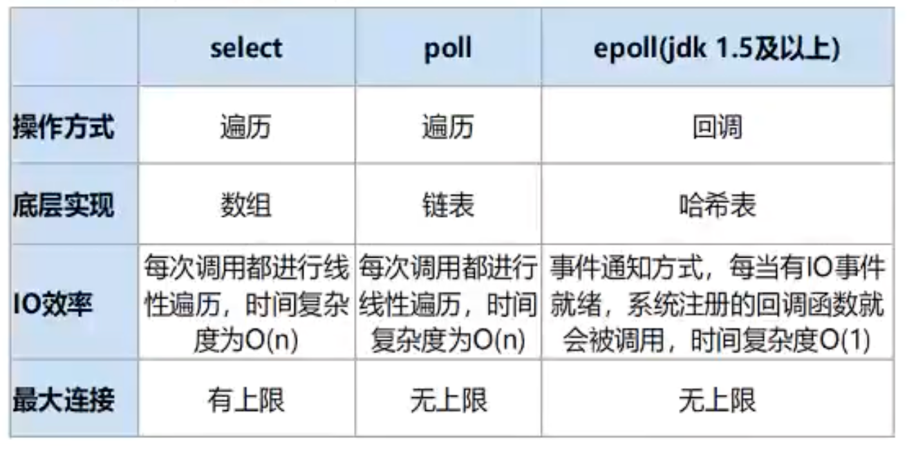

2023-02-27
底层实现
修改于: 2023-02-27基于epoll, 多路复用
I/O多路复用底层主要用的Linux 内核函数 （select, poll, epoll）来实现， windows不支持epoll实现，windows底层是基于winsock2的
select函数实现的（不开源）

Linux下可参考 IO模型
底层数据结构
整体看是大的全局hash表(k-v)
但是对于value来说, 有不同情况. value常见支持类型:
- String
- List (比如消息队列)
- Set (比如关注列表)
- Hash (复杂最想存储)
- Zset（有序集合）SortSet (比如排行榜)
- String
简单动态字符串
- 能转整数的, 用int
- 小于等于44字节的, 用 “embstr”
- 大于44字节, 用 “raw”
如果要查看底层数据存储:
object encoding $key
- Hash
- hash表, 压缩列表
- List
- 压缩列表(ziplist), 双向链表
- Set
- hash表, 整数数组
- ZSet
压缩列表, 跳表(skiplist)
可能会在存储时候, 切换数据结构
跳表(skiplist)优化
对于每两个元素, 取第一个向上提取一层(建立冗余索引), 类似于B+树

提高查找性能